Capturas de tela
Algumas capturas de tela.
Tela de login
Captura da tela de login onde se informa a URL da API do Zabbix e o token.
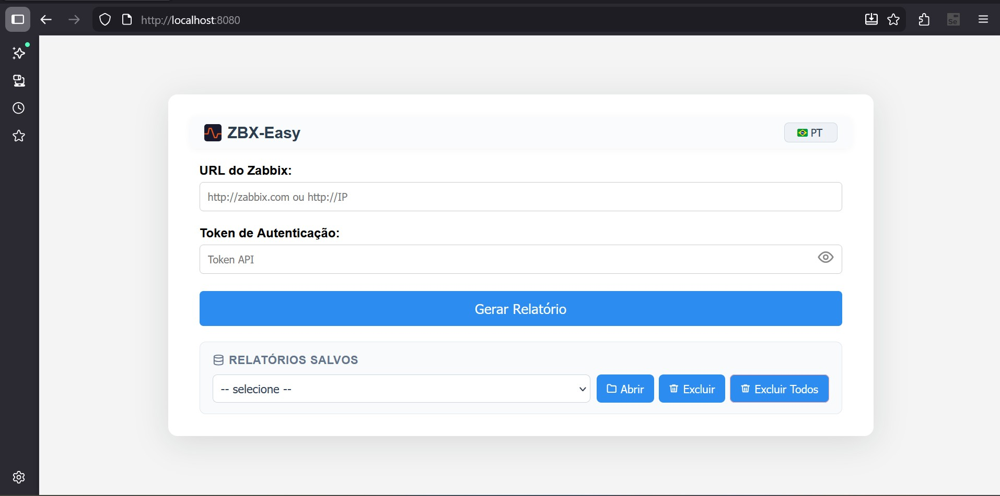
Relatório: Visão geral (Summary)
Aba de resumo do relatório gerado com métricas e indicadores principais.
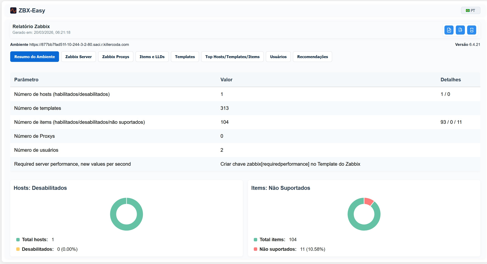
Zabbix Server: pollers
Métricas internas do Zabbix Server mostrando processos poller e seus estados.
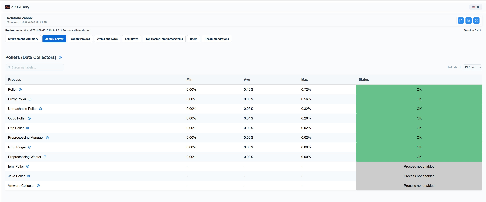
Zabbix Server: detalhes internos
Detalhes internos do Zabbix Server utilizados no relatório.
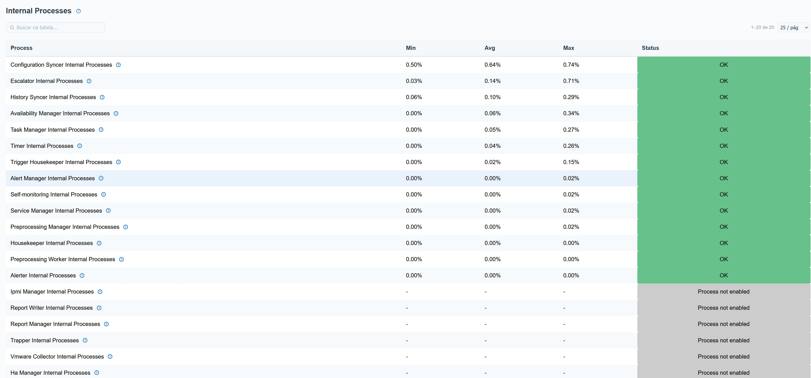
Zabbix Proxy: lista
Lista de proxies Zabbix configurados exibida no relatório (visão da lista de proxies).
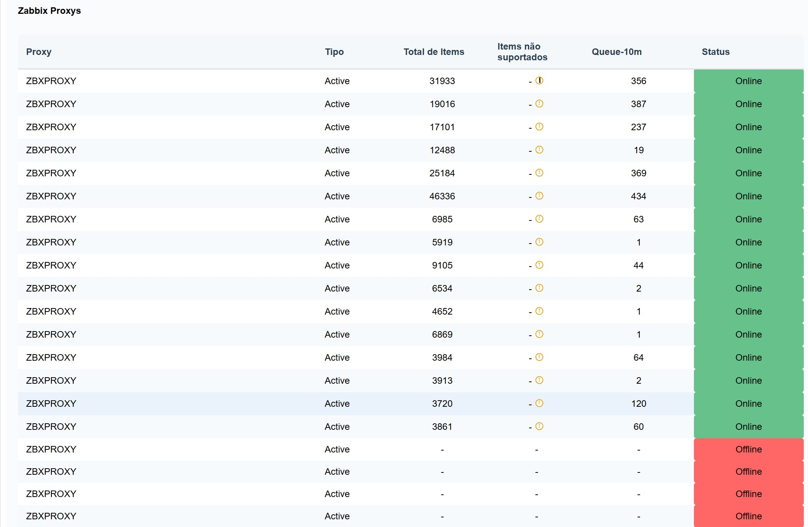
Zabbix Proxy: detalhes do proxy
Métricas detalhadas e status para um proxy Zabbix selecionado.
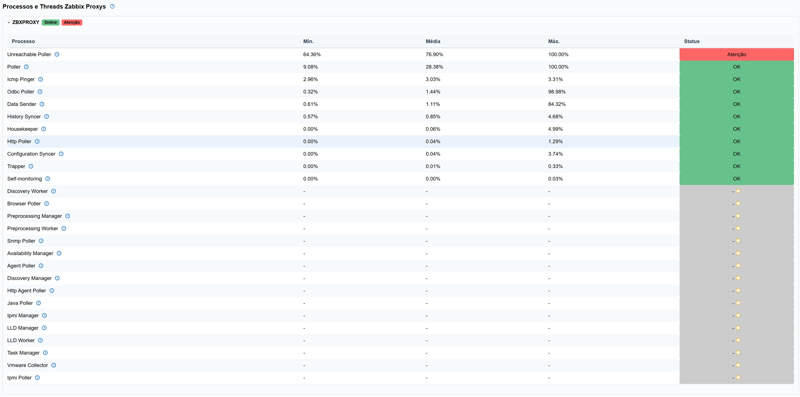
Itens: exemplo de descoberta (LLD)
Seção de exemplo mostrando items provenientes de Low-Level Discovery.
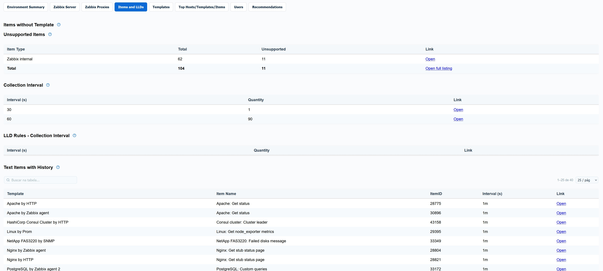
Relatório: Templates e associações
Abas de templates mostrando uso e hosts vinculados.
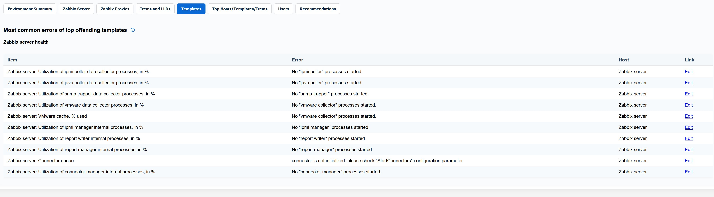
Relatório: Principais itens (Top)
Exibe os itens de maior impacto e suas métricas.
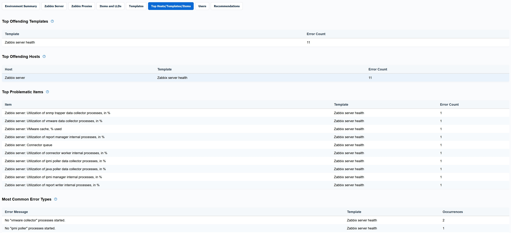
Relatório: Usuários e permissões
Contagem de usuários e possíveis configurações inseguras (ex.: conta admin padrão).
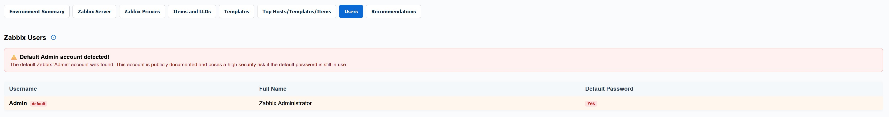
Relatório: Recomendações (visão geral)
Recomendações geradas pela ferramenta, organizadas por tópicos.
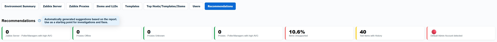
Tópicos de recomendação: geral
Visão expandida dos tópicos de recomendação e itens afetados.
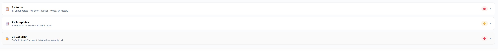
Tópico: Templates
Recomendações relacionadas ao uso e melhoria de templates.
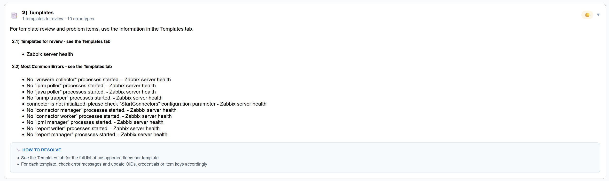
Tópico: Segurança
Recomendações com foco em segurança, como contas padrão e senhas.
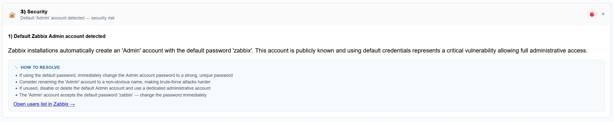
Tópico: Itens (LLD / SNMP)
Recomendações ao nível de items, incluindo descoberta (LLD) e parâmetros SNMP.
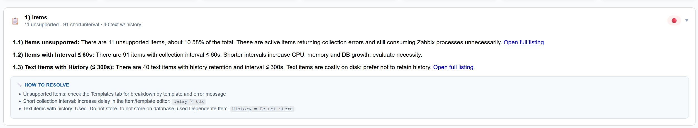
Seletor de idioma
Mostra o dropdown de seleção de idioma (PT/EN) e variação dos rótulos.
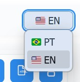
Botões de ação
Botões principais e controles usados para gerar e exportar relatórios.
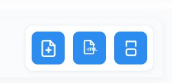
Relatórios do Banco de Dados
Carrega relatórios do banco de dados.
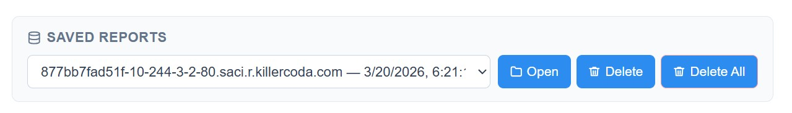